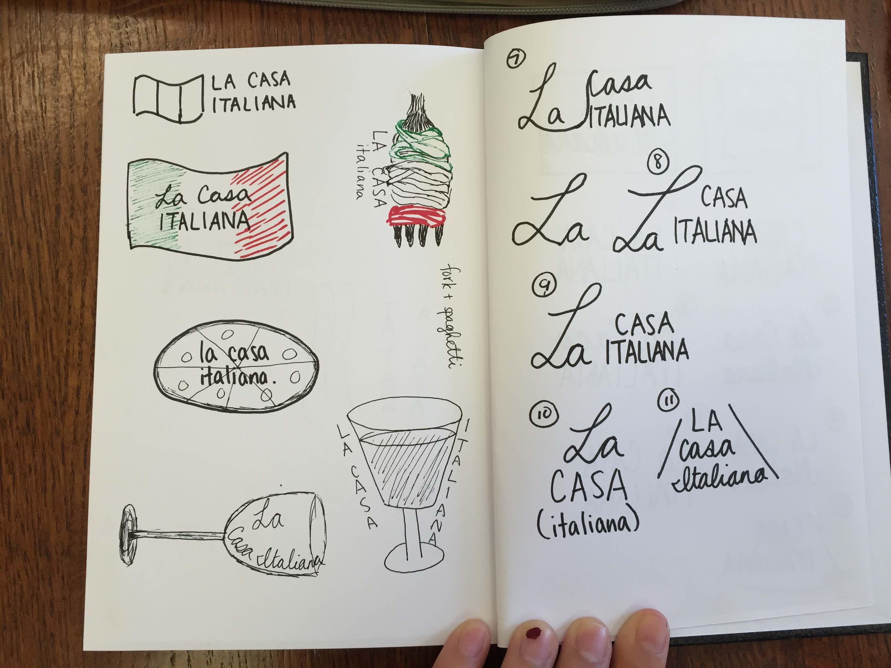

I volunteered to design a wine bottle label in 2 days for Stanford's Casa Italiana's Pizzeria social event.
What is Italy?
As soon as I agreed to take on this small project, I had a huge rush of nostalgia for my time spent studying abroad in Italy, so my mind started racing with anything that defined the Italian lifestyle. Spaghetti, the Italian flag, coffee, wine, pizza, and elegance. I had never done anything graphic design related, so it was a challenge I took upon to expand my thought process.
A Look into the Field
I then Google searched what actual wine labels looked like to gather a sense of the look and feel of the label. Most of them had the name of the winery, a simple design, the name of the wine as well as the year. I wanted the label to be simple, minimal, and elegant, so I decided to only include the house name and Pizzeria event. After working a bit with the house staff, we agreed to include four elements of Italian culture: coffee, music, wine, and pizza.
Iterate, Iterate, Reiterate
Neither of these designs really stuck out to us, and I decided to nix the background image because it was too much chaos to the eye. But without a background image, the white was just too plain, so I added a fancy border to spice it up. We also thought the all-capitals lacked personality but represented elegance quite nicely, so we opted for a harmonious mix of fancy script plus simple capitals.
Final Revision
Something looked off about the music note in the X logo, so I substituted music with olives, making the logo look more balanced. That awkward space under "La" was also a problem, so I added some vines and curls to make the L fancier and more characteristic. I think it gives it a quite nice and elegant vineyard feel, don't you?